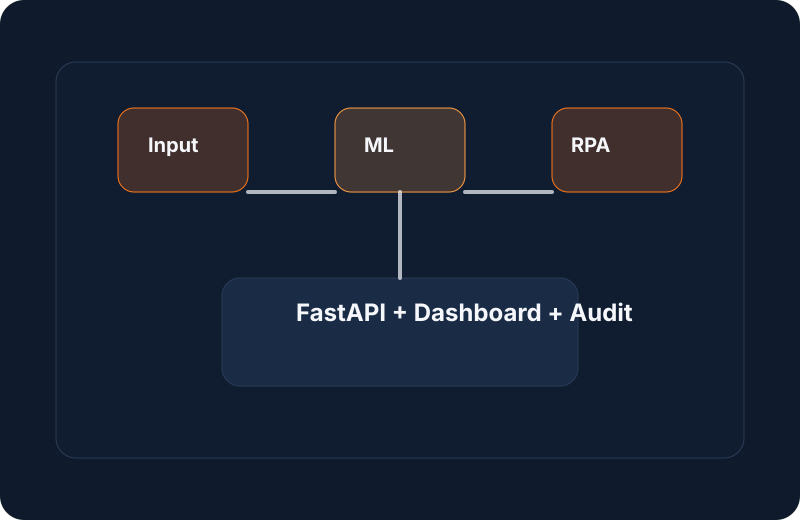
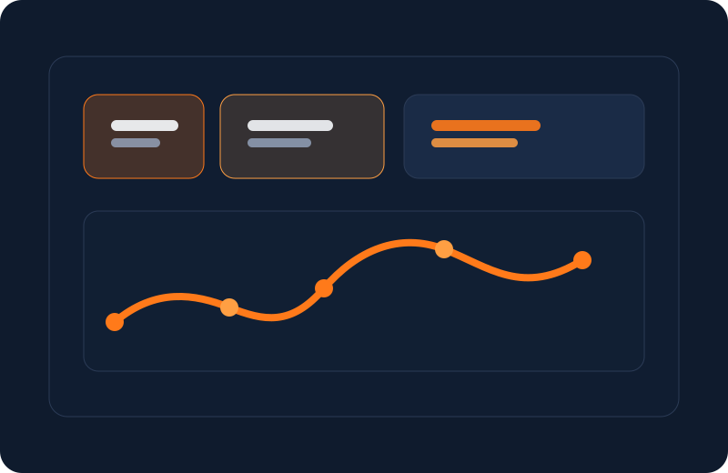

Projet de fin d’études — Système IA bancaire
Développement d’un système hybride pour la détection d’incidents IT, combinant score d’anomalie, XGBoost, LightGBM, NLP et automatisation UiPath.
AI & Data Science Engineer
Je conçois des plateformes IA, des APIs sécurisées et des workflows d’automatisation pour transformer des données complexes en actions concrètes.
Passionnée par les systèmes intelligents, l’automatisation et la création de valeur via la data.
About
Je suis titulaire d’un parcours en génie logiciel avec un fort intérêt pour la data science, l’intelligence artificielle et l’automatisation. Mon projet de fin d’études a porté sur la détection intelligente d’incidents IT dans un contexte bancaire, en combinant XGBoost, LightGBM, NLP et UiPath.
Mon objectif est de créer des solutions fiables, explicables et utiles pour les entreprises, avec un focus sur la qualité de l’expérience utilisateur, la sécurité des données et l’impact métier.
Experience
Développement d’un système hybride pour la détection d’incidents IT, combinant score d’anomalie, XGBoost, LightGBM, NLP et automatisation UiPath.
Conception d’API sécurisées, d’un dashboard de supervision et d’un flux complet de recommandation et d’audit.
Mise en place d’un flux de traitement automatisé des alertes critiques avec notification et confirmation de résolution.
Certifications
Développement de modèles supervisés, pipelines de données, évaluation et mise en production.
Automatisation de tâches décisionnelles avec UiPath et intégration d’API intelligentes.
Skills
Projects
Plateforme intelligente de détection d’incidents IT pour un contexte bancaire, construite autour d’une architecture hybride combinant score d’anomalie, XGBoost, LightGBM, NLP et automatisation UiPath.


Contact
Vous pouvez me contacter pour des collaborations autour de l’IA, du backend ou de l’automatisation.